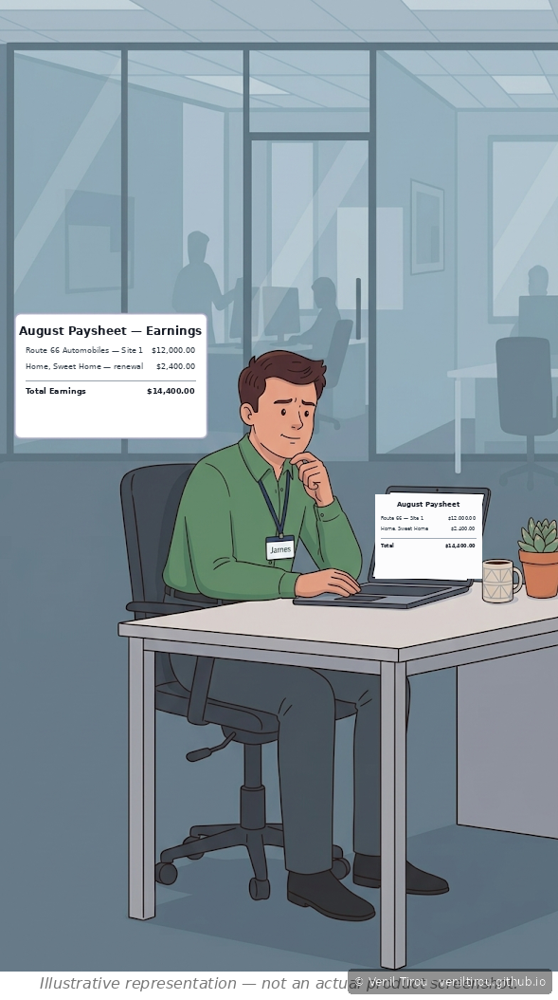
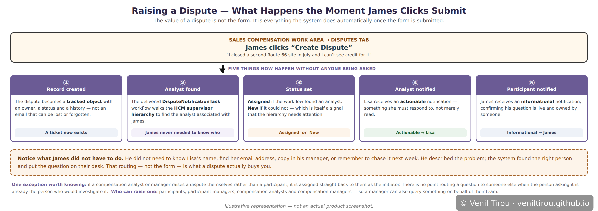
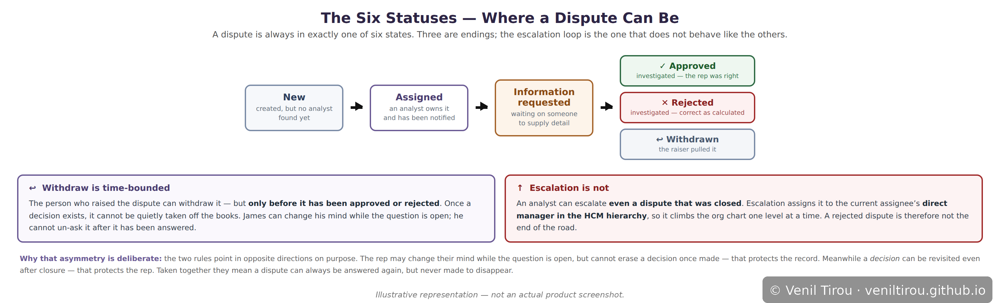
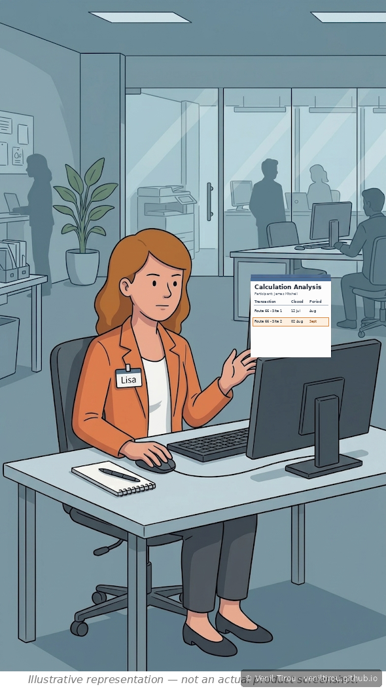
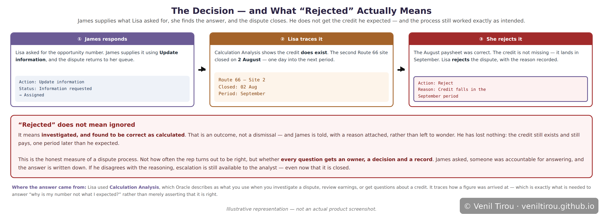
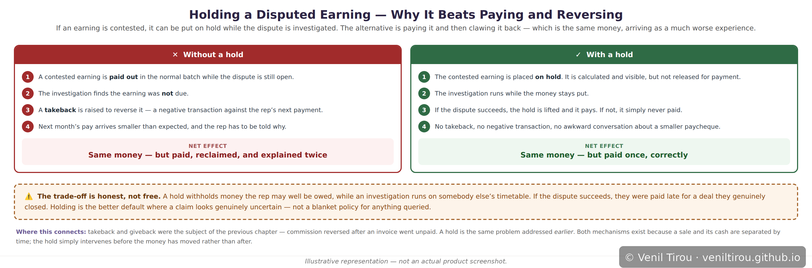
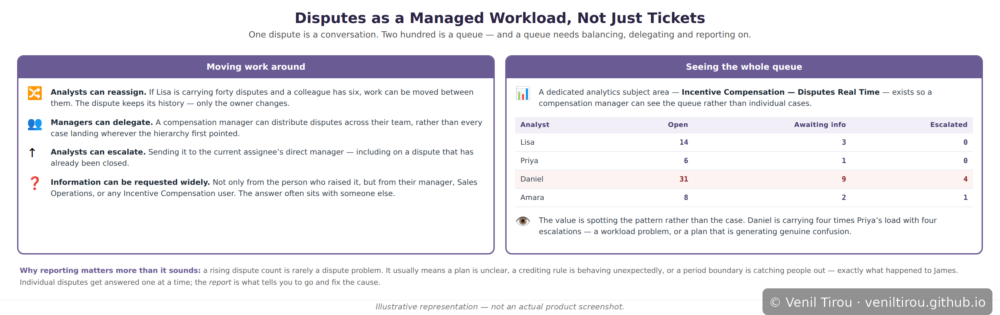

When the Rep Says the Number Is Wrong — Disputes
Every chapter so far has assumed the calculation was right. This one starts where it isn't — or where the rep believes it isn't, which amounts to the same thing until somebody checks. A dispute is what turns "I think my commission is wrong" from an email into a tracked record with an owner, a status and a decision.
Scene 1 — Something's Missing

📱 On mobile? Pinch to zoom to read the details clearly.
Before disputes existed as a system object, this is exactly where the problem would become an email. To his manager, forwarded to somebody in compensation, landing in a queue with no owner and no record that it was ever asked. Three weeks later James asks again and nobody can find the original message.
Scene 2 — Raising It

📱 On mobile? Pinch to zoom to read the details clearly.
The system creates the record; the delivered DisputeNotificationTask workflow walks the HCM supervisor hierarchy to find the analyst associated with James; the status is set to Assigned if it found her and New if it could not; Lisa receives an actionable notification, and James an informational one.
Notice what James never had to do: know who Lisa is, find her email address, copy in his manager, or remember to chase it next week. He described the problem and the system put it on the right person's desk. That routing — not the form — is what a dispute buys you.
Scene 3 — The Six Statuses

📱 On mobile? Pinch to zoom to read the details clearly.
Two rules govern the edges of that model, and they deliberately point in opposite directions. Withdraw is time-bounded — the person who raised it can only pull it back before a decision exists, so a closed case cannot be quietly taken off the books. Escalation is not — an analyst can escalate even a dispute that was closed, and escalation assigns it to the current assignee's direct manager in the HCM hierarchy, climbing the org chart one level at a time.
Taken together: a dispute can always be answered again, but never made to disappear.
Scene 4 — Lisa Investigates

📱 On mobile? Pinch to zoom to read the details clearly.
The screen already contains the answer. Site 1 closed on 12 July and fell into the August period. Site 2 closed on 2 August — one day into the next period — so its credit lands in September. The credit is not missing at all.
In practice an analyst often needs something from the participant before reaching this point, and Request more information moves the dispute to Information requested while they wait. Worth knowing that information can be requested from more than the person who raised it: the participant's manager, Sales Operations, or any Incentive Compensation user. The answer frequently sits with somebody else.
Scene 5 — The Decision

📱 On mobile? Pinch to zoom to read the details clearly.
And this is the scene's real point: "rejected" does not mean ignored. It means investigated, and found to be correct as calculated. That is an outcome rather than a dismissal, and James is told why rather than left to wonder. He has lost nothing — the credit exists and still pays, one period later than he expected.
Which is the honest measure of a dispute process. Not how often the rep turns out to be right, but whether every question gets an owner, a decision and a record. And if James disagrees with the reasoning, escalation remains available to the analyst even now that it is closed.
Scene 6 — Holding a Disputed Earning

📱 On mobile? Pinch to zoom to read the details clearly.
The alternative is to pay it and then reclaim it, which means a takeback, a negative transaction, a smaller paycheque next month, and a conversation explaining why. Same money, considerably worse experience. This connects directly to the previous chapter: a hold addresses the same problem earlier, before the money has moved.
The trade-off is honest rather than free. A hold withholds money the rep may well be owed while an investigation runs on somebody else's timetable. It is the better default where a claim looks genuinely uncertain — not a blanket policy for anything queried.
Scene 7 — The Queue

📱 On mobile? Pinch to zoom to read the details clearly.
A dedicated analytics subject area — Incentive Compensation — Disputes Real Time — exists so that a compensation manager can see the whole queue rather than individual cases: how many are open per analyst, what their statuses are, and which have been escalated.
The value is spotting the pattern rather than the case. A rising dispute count is rarely a dispute problem. It usually means a plan is unclear, a crediting rule is behaving unexpectedly, or a period boundary is catching people out — which is exactly what happened to James. Individual disputes get answered one at a time; the report is what tells you to go and fix the cause.
Why This Chapter Matters
What the system actually supplies is obligation. The routing means someone owns it. The status means its state is visible. The decision means it ends in an answer rather than silence. And the record means the answer survives after everyone has moved on.
Note that James was wrong, and the process still worked. That is worth sitting with. A good dispute process is not one that finds in the rep's favour; it is one where being wrong still gets you an explanation. James leaves knowing where his credit went. Under the email version he would have been left assuming he had been short-changed and nobody had bothered to look.
Concepts Covered
| Concept | What it means | Scene |
|---|---|---|
| Dispute | A formal, tracked record raised when a participant believes a compensation figure is wrong. It has an owner, a status and a history — which is precisely what an email does not. | 1, 2 |
| Who can raise one | Four roles: participants, participant managers, compensation analysts and compensation managers. A manager can therefore query something on behalf of their team. | 2 |
| DisputeNotificationTask | The delivered workflow that runs on submission. It walks the HCM supervisor hierarchy to find the analyst associated with the participant, so the person raising a dispute never needs to know who will handle it. | 2 |
| Actionable vs informational notifications | The analyst receives an actionable notification — something requiring a response. The participant receives an informational one, confirming the question is live and owned. | 2 |
| The six statuses | New, Assigned, Information requested, and three endings: Approved, Rejected, Withdrawn. A dispute is always in exactly one of them. | 3 |
| Withdraw | The person who raised a dispute can pull it back — but only before it has been approved or rejected. A decision, once made, cannot be quietly removed. | 3 |
| Escalation | An analyst can escalate a dispute, including one that has already been closed. Escalation assigns it to the current assignee's direct manager in the HCM hierarchy, so it climbs one level at a time. | 3, 7 |
| Request and update information | The analyst can request detail from the participant, their manager, Sales Operations, or any Incentive Compensation user — and the reply returns the dispute to the analyst's queue. | 4, 5 |
| Calculation Analysis | The tool used to trace how a figure was arrived at — described by Oracle as what you use when investigating a dispute, reviewing earnings or answering questions about a credit. | 4 |
| Approve and reject | The two investigated outcomes. Rejected means examined and found correct as calculated — an answer with a reason attached, not a dismissal. | 5 |
| Holding a disputed earning | A contested earning can be held — calculated and visible but not paid — while the dispute is investigated, avoiding the pay-then-reclaim cycle that a takeback would otherwise require. | 6 |
| Reassign and delegate | Analysts can move disputes between themselves to balance workload; managers can distribute them across a team. The dispute keeps its history — only the owner changes. | 7 |
| Disputes analytics | A dedicated subject area, Incentive Compensation — Disputes Real Time, showing open counts, statuses and escalations by analyst. Its real value is revealing the cause behind a rising dispute count. | 7 |